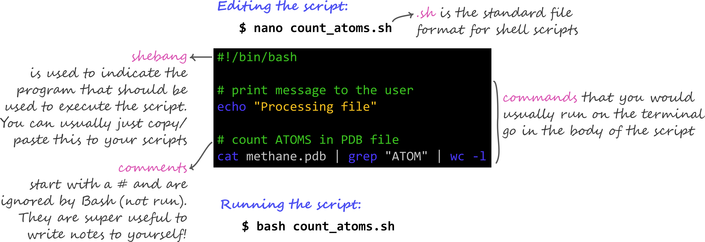

2.9 Bonus: Shell Scripts
Teaching: 30 min || Exercises: 10 min
Overview
2.9.1 Background
So far, we have been running commands directly on the console in an interactive way. We are finally ready to see what makes the shell such a powerful programming environment. We are going to take the commands we repeat frequently and save them in files so that we can re-run all those operations again later by typing a single command. For historical reasons, a bunch of commands saved in a file is usually called a shell script, but make no mistake: these are actually small programs.
2.9.2 My first script
Let’s start by going back to molecules/ and creating a new file, middle.sh which will become our shell script:
cd molecules
nano middle.shThe command nano middle.sh opens the file middle.sh within the text editor ‘nano’ (which runs within the shell). If the file does not exist, it will be created. We can use the text editor to directly edit the file – we’ll simply insert the following line:
head -n 15 octane.pdb | tail -n 5The command we just saved is a variation on the pipe we constructed earlier: it selects lines 11-15 of the file octane.pdb. Remember, we are not running it as a command just yet: we are putting the commands in a file.
Then we save the file (Ctrl-O in nano), and exit the text editor (Ctrl-X in nano). Check that the directory molecules now contains a file called middle.sh.
Once we have saved the file, we can ask the shell to execute the commands it contains. Our shell is called bash, so we run the following command:
Sure enough, our script’s output is exactly what we would get if we ran that pipeline directly.
We usually call programs like Microsoft Word or LibreOffice Writer “text editors”, but we need to be a bit more careful when it comes to programming. By default, Microsoft Word uses .docx files to store not only text, but also formatting information about fonts, headings, and so on. This extra information isn’t stored as characters, and doesn’t mean anything to tools like head: they expect input files to contain nothing but the letters, digits, and punctuation on a standard computer keyboard. When editing programs, therefore, you must either use a plain text editor, or be careful to save files as plain text.
2.9.3 Running bash scripts with arguments
What if we want to select lines from an arbitrary file? We could edit middle.sh each time to change the filename, but that would probably take longer than typing the command out again in the shell and executing it with a new file name. Instead, let’s edit middle.sh and make it more versatile:
nano middle.shNow, within “nano”, replace the text octane.pdb with the special variable called $1:
Inside a shell script, $1 means ‘the first filename (or other argument) on the command line’. We can now run our script like this:
or on a different file like this:
For the same reason that we put the loop variable inside double-quotes, in case the filename happens to contain any spaces, we surround $1 with double-quotes.
We still need to edit middle.sh each time we want to adjust the range of lines, though. Let’s fix that by using the special variables $2 and $3 for the number of lines to be passed to head and tail respectively:
nano middle.shWe can now run:
By changing the arguments to our command we can change our script’s behaviour:
2.9.4 Adding comments to bash scripts
Our middle.sh script works perfectly well, but it may take the next person who reads it a moment to figure out what it does. We can improve our script by adding some comments at the top:
nano middle.shA comment starts with a # character and runs to the end of the line. The computer ignores comments, but they’re invaluable for helping people (including your future self) understand and use scripts. The only caveat is that each time you modify the script, you should check that the comment is still accurate: an explanation that sends the reader in the wrong direction is worse than none at all.
What if we want to process many files in a single pipeline? For example, if we want to sort our .pdb files by length, we would type:
wc -l *.pdb | sort -nbecause wc -l lists the number of lines in the files (recall that wc stands for ‘word count’, adding the -l option means ‘count lines’ instead) and sort -n sorts things numerically. We could put this in a file, but then it would only ever sort a list of .pdb files in the current directory. If we want to be able to get a sorted list of other kinds of files, we need a way to get all those names into the script. We can’t use $1, $2, and so on because we don’t know how many files there are. Instead, we use the special variable $@, which means, ‘All of the command-line arguments to the shell script’. We also should put $@ inside double-quotes to handle the case of arguments containing spaces ("$@" is equivalent to "$1" "$2" …) Here’s an example:
Suppose we have just run a series of commands that did something useful — for example, that created a graph we would like to use in a paper. We would like to be able to re-create the graph later if we need to, so we want to save the commands in a file. Instead of typing them in again (and potentially getting them wrong) we can do this:
history | tail -n 5 > redo-figure-3.shThe file redo-figure-3.sh now contains:
After a moment’s work in an editor to remove the serial numbers on the commands, and to remove the final line where we called the history command, we have a completely accurate record of how we created that figure.
In practice, most people develop shell scripts by running commands at the shell prompt a few times to make sure they’re doing the right thing, then saving them in a file for re-use. This style of work allows people to recycle what they discover about their data and their workflow with one call to history and a bit of editing to clean up the output and save it as a shell script.
2.9.5 Nelle’s Pipeline: Creating a Script
Nelle’s supervisor insisted that all her analytics must be reproducible. The easiest way to capture all the steps is in a script.
First we return to Nelle’s data directory:
cd ../north-pacific-gyre/2012-07-03/She runs the editor and writes the following:
# Calculate stats for data files.
for datafile in "$@"
do
echo $datafile
bash goostats $datafile stats-$datafile
doneShe saves this in a file called do-stats.sh so that she can now re-do the first stage of her analysis by typing:
bash do-stats.sh NENE*[AB].txtShe can also do this:
bash do-stats.sh NENE*[AB].txt | wc -lso that the output is just the number of files processed rather than the names of the files that were processed.
One thing to note about Nelle’s script is that it lets the person running it decide what files to process. She could have written it as:
# Calculate stats for Site A and Site B data files.
for datafile in NENE*[AB].txt
do
echo $datafile
bash goostats $datafile stats-$datafile
doneThe advantage is that this always selects the right files: she doesn’t have to remember to exclude the ‘Z’ files. The disadvantage is that it always selects just those files — she can’t run it on all files (including the ‘Z’ files), or on the ‘G’ or ‘H’ files her colleagues in Antarctica are producing, without editing the script. If she wanted to be more adventurous, she could modify her script to check for command-line arguments, and use NENE*[AB].txt if none were provided. Of course, this introduces another tradeoff between flexibility and complexity.
2.9.6 Indicating program to execute script
Although the scripts we have created and run works perfectly well. It is a good practice to specify the program you would like to be used to execute the script. In addition to the .sh telling us it is a bash script, we need to include #!/bin/bash often as the first line before the contents of our script begin. If we had written our script in another programming language, say python, we would have included #!/usr/bin/env python to tell the console to run the script with python.
2.9.7 Summary: Key features of a script

2.9.8 Credit
Information on this page has been adapted and modified from the following source(s):
Gabriel A. Devenyi (Ed.), Gerard Capes (Ed.), Colin Morris (Ed.), Will Pitchers (Ed.),Greg Wilson, Gerard Capes, Gabriel A. Devenyi, Christina Koch, Raniere Silva, Ashwin Srinath, … Vikram Chhatre. (2019, July). swcarpentry/shell-novice: Software Carpentry: the UNIX shell, June 2019 (Version v2019.06.1).
https://github.com/cambiotraining/UnixIntro
https://github.com/cambiotraining/unix-shell